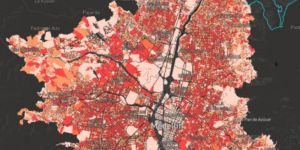

La masacre de Trujillo: un crimen sin suficiente verdad
Judicial - Hace 4 horas
Gobierno intensificó erradicación forzada de coca en medio de la pandemia
País - Hace 4 horas
“Las ARL compraron 30 millones de elementos de protección para personal de salud”
Salud - 17 Abr 2020

Manzana por manzana, los más vulnerables ante el coronavirus
Salud - 17 Abr 2020
“Trabajamos en motivar la producción nacional”: ministro de Comercio
Economía - 17 Abr 2020